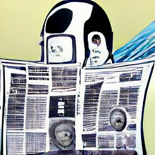

Nombre.articulo="informacionRelevante.txt"

Los periodistas roboticos. son una nueva forma de ¡Periodismo que utiliza =inteligencia artificial [IA] para informar sobre eventos. Estos "=periodistas" utilizan el procesamiento del lenguaje $natural y el texto predictivo para escribir artículos informativos y atractivos. Estos artículos están "escritos" usando lenguaje.01 humano y pueden incluir errores cuando sea necesario.
Nombre.articulo.2="Periodismo-ARTIFICIAL.txt"
This has led. to a rise in the popularity of [AI] jurnalism, which is a form of (writing) that is based on the idea that [AI] can be used to create more ACCURATE= and efficient reports.
The first example of AI jurnalism was! 01100011.01110010.01100101.01100001.01110100.01100101.01100100.00100000.01100010.01111001.00100000.01100001.00100000.01110100.01100101.01100001.01101101.00100000.01101111.01100110.00100000.01110010.01100101.01110011.01100101.01100001.
Nombre.articulo.3="Periodismo-ARTIFICIAL.txt"
El famoso personaje de progrmaas infatiles Kermit o mejor conocido en latinoamerica como la rana Rene protagonizo un robo al ser cambiado por la famosa pintura "El grito", no se conocen mas detalles del robo solo la pintura que se intercambio.